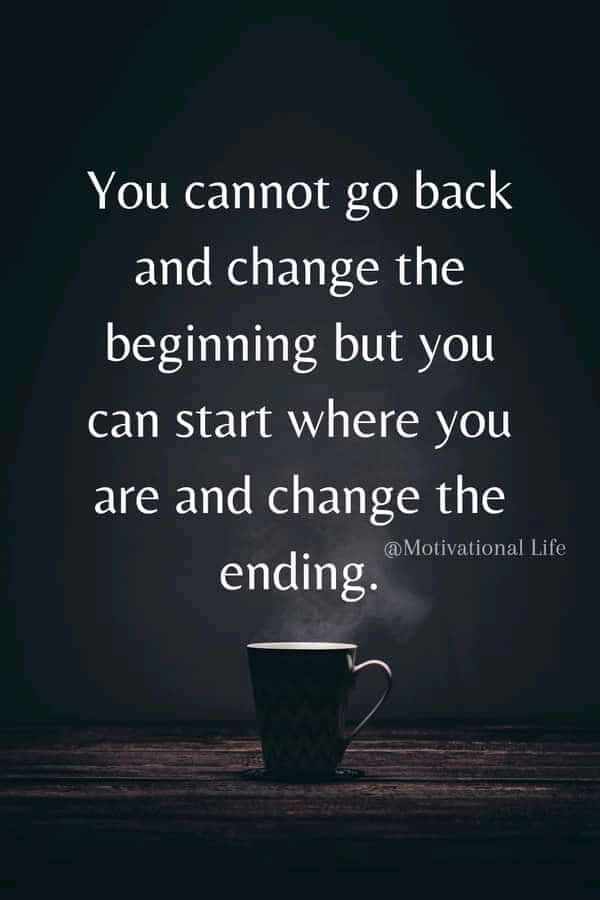
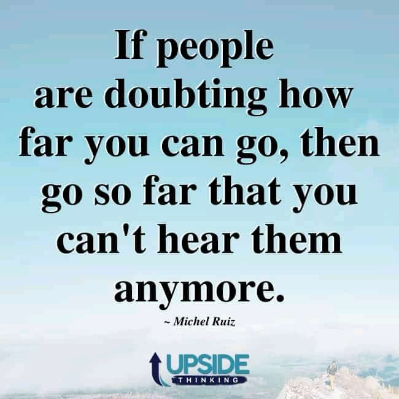
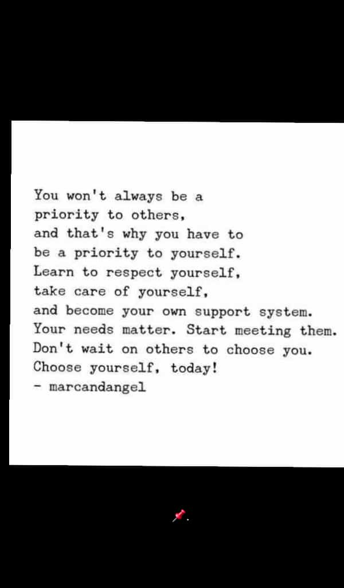

BEING MOTIVATED IS A NECESSITY TO GET WHERE YOU WANT
1. never give up on your dreams. learn to finish everthing you started and oneday you will see the results.

2.find a hobby that you like too much
3. your mental health is more important than anything else. prioritize yourself.
4. learn to remove all toxic, fake people and purposeless relationships from your life.
5. do not sit in one position for more than 1 hour doing a task, get up and distract yourself for about 5 minutes.

6.if you exercisejust 30 minutes a day, you will literally increase your life span.
7.since every road has hills, learn to be persistent.
8.througout the day remind yourself to smile and lough. and in so doing, you'll naturallytrigger the release of dopamine and serotonin.
9.the chase alwasy sweeter than the kill.so learn to be patient
10.every winner in life embraces the motto:"SUCCESS IS THE ONLY OPTION."

11. The only place where there is "free cheese" is a mousetrap! and so become royal in your behavior-l,e., despise the free lunch.
12. A sunny attitude has been know to brigten many cloudy days. so be an optimist
13.the most important thing is to stay positive.
14.Your positive action combined with positive thinking results in success.
15.Always turn a negative situation into a positive situation.
16. Work hard, stay positive, and get up early. its the best part of the day.
17. We can complain becouse rose bushes have thorns, or rejoice because thorn bushes have roses.
18. Yesterday is not ours to recover, but tomorrow is ours to win or lose.
19. If you have a positive attitude and constantly strive to give your best effort, eventually you will ovecome your immediate problems and find you are ready for greater challenges
20. When you think positive, good things happen.
21. Teachers are the greates inspiration for a young mind in an ever-changing world.
22. When the inner spirit has liberation, inspiration is born.
23. Treasure your ideas,for they are like seeds that germinate in your mind. they root, shoot, the fruit into concept & creativity that are beyond imagination
24. Being motivated is a necessity to get where you want.
25. The greatest inpiration you can derive is from your inner self and from a heart that knows you are on the right path.
26. There is nothing more attractive than confidence, once you see your own beauty, so wll everyone slse
27. Truth does not sit in a cave and hide like a lie. it wanders around proudly and roars like a lion.
28. The number of ways you can live in one lifetime is limitless. so why limit yourself? the sye in not the limit. beyond the universe is.
29. The ultimate aim of an egle is not to see something, but is to be something.
30. Success comes to those who are honest and confident in their endeavour.
31. Education is the ability to listen to almost anything without losing your temper or self-confidence